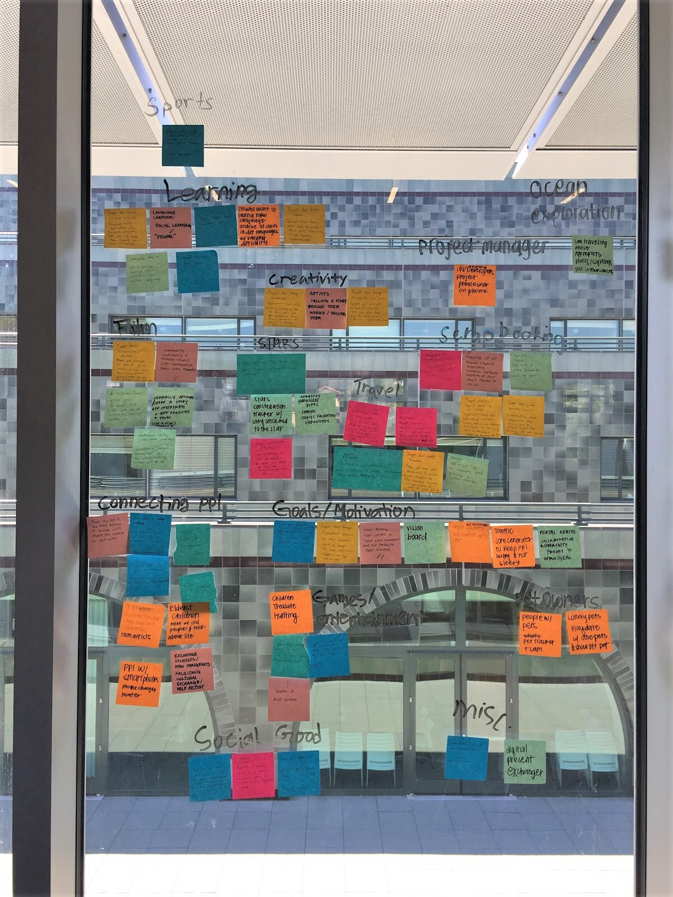

Watch and Learn
Watch and learn is a supplementary language learning tool for people who like to watch anime.
This project was the final project for User Interface Design and Development (CS 160) at UC Berkeley, summer 2018. Brought to you by Team Rocket: Marinella Bohol, Christian Cayabyab, Shirley Li, Sanket Padmanabhan, and yours truly.
The goal of this project was to create an application around the theme of storytelling, which was defined as "interfaces that engage the user in creating, viewing, sharing, or interpreting a story."
Brainstorming

We began by brainstorming